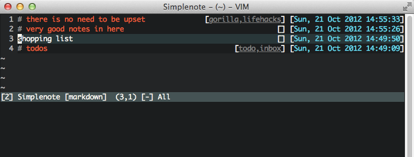

vim plugin to interact with the simplenote service
A vim plugin to interact with the simplenote API. You can create an account here if you don't already have one. Now you can take simple notes directly from your favourite editor.

The simplest way is to copy plugin and autoload into your .vim directory.
But you really want to use pathogen for your plugin management.
Your credentials have to be stored in your vimrc:
let g:SimplenoteUsername = "your simplenote username"
let g:SimplenotePassword = "your simplenote password"
If you don't want to have the credentials in your vimrc (if you manage it
with git for example), you can just set the variables in a different file (like
~/.simplenoterc) and source it with source ~/.simplenoterc in your vimrc.
By default all notes are treated as plain text. If you usually write all of
your notes in some other format (like markdown or restructured text) you can
set g:SimplenoteFiletype to the preferred vim filetype.
The plugin provides several commands to interact with your Simplenote account. In order to retrieve a list of your notes execute
:Simplenote -l X
:Simplenote -l todo,shopping
Where X is the number of notes to retrieve; omit X to retrieve all. This opens
a new scratch buffer with a line-wise listing of your notes. With let
g:SimplenoteListHeight=X set, the scratch buffer will come up X lines tall.
Alternatively when let g:SimplenoteVertical=1 is set, it is opened as a
vertical rather than horizontal split window. You can also pass a comma
separated list of tags. This will only list notes which have at least one of
those tags. You can then navigate through the with the arrow keys and enter a
note on hitting Return. Now that you see the content of the note, you can
interact with this specific note:
:Simplenote -u
updates the content of the current note with the content of the current buffer.
The buffer write command :w is also mapped to update the current note.
If you want to delete the note, execute
:Simplenote -d
This moves the current note to the trash. If you want to completely delete a note, use
:Simplenote -D
as it will directly delete the note and not only move it to the trash. There also exists a command to create new notes.
:Simplenote -n
creates a new note with the contents of the current buffer. Once the note is
created, :Simplenote -u updates the newly created note, also with the
contents of the current buffer.
Tagging notes is also supported. If you enter
:Simplenote -t
on a buffer containing a valid note, you get an input dialog, prefilled with
existing comma-separated tags for the note, which you can then edit. Tags have
to be comma separated and hitting Enter will then update the note with the
new tag list.
Version 2 of the SimpleNote API relies heavily on JSON. As JSON and VimL don't really play nice together, basic parts of this plugin are implemented in python. Therefore your vim has to be compiled with python support in order to use this plugin.
Since the plugin uses Python's urllib2 for making HTTP requests, you just have to
add these lines (with the correct values) to your .vimrc:
let $HTTP_PROXY = 'http://<proxyuser>:<proxypassword>@<proxyurl>:<proxyport>'
let $HTTPS_PROXY = 'http://<proxyuser>:<proxypassword>@<proxyurl>:<proxyport>'
@mattn, @tpope and @scrooloose who write awesome vim plugins which I took as a basis to learn how to write vim plugins.